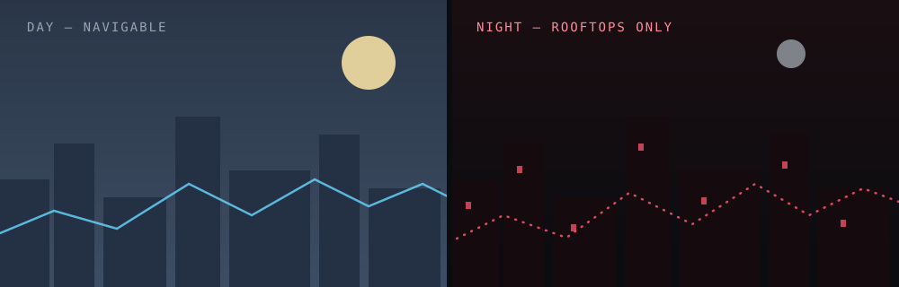

Most open-world games treat traversal as the tax you pay to get to the interesting part. Dying Light is one of the few that made getting there the interesting part. Years after first playing it, its parkour is still the thing I think about most when I'm sketching movement systems of my own — so I wanted to actually pick apart why it works.
Movement as the core mechanic, not a coat of paint
A lot of games bolt free-running onto a shooter or an RPG and call it a feature. Dying Light builds outward from movement instead: the city of Harran is a dense, vertical playground of rooftops, pipes, and gaps that are just slightly too far to make safely. Every ledge grab, vault, and slide is tuned to feel a fraction more dangerous than it actually is — which is exactly what keeps you engaged instead of numb to it.
The key design decision, as far as I can tell, is that momentum has consequences. Sprinting builds a stamina cost, missed jumps have real fall damage, and the environment is built with enough verticality that a bad decision three rooftops back can still be recovering from when you land the next jump. That's what separates "traversal tech demo" from "a system you have to actually get good at."
The best traversal systems don't remove risk from movement — they make the risk legible enough that failure feels like your mistake, not the game's.
Night and day as a difficulty dial, not just a skybox
The day/night cycle is the other piece that makes the parkour matter. During the day, Harran is dangerous but navigable. At night, faster and far more aggressive infected come out, and the smart play is almost always to stay on the rooftops rather than fight. That single rule — the ground belongs to them after dark — retroactively makes every skill you've built during the day feel like it has a purpose beyond looking cool.
- Daytime parkour teaches you the map and the rhythm of movement with a forgiving safety net.
- Nighttime parkour is a stress test of that same skill set, under a much smaller margin for error.
- The UV light mechanic (and later, chases from Volatiles) gives night traversal its own tension curve instead of just being "day mode but harder."

What I've taken from it as a developer
I don't build anything close to Dying Light's scale, but the underlying lesson travels well to much smaller games: movement feels good when the player's skill is legible to them, not just measured by the game. In my own projects — Little Guys especially — I've tried to carry over the idea that a traversal or combat system should teach itself through consequence rather than a tutorial popup: let a near-miss teach the player what "close" feels like, and they'll internalize the rule much faster than if you'd just told them.
A small, boring example of that from my own movement code — momentum and fall risk have to be scaled by real elapsed time, not by frame count, or the "risk" the player is reading stops meaning anything the moment their frame rate changes:
class Runner:
def update(self, delta_time: float) -> None:
# momentum builds with real elapsed time, not frame count
self.stamina -= self.sprint_cost * delta_time
self.position += self.velocity * delta_time
if self.falling:
self.fall_speed += GRAVITY * delta_time
self.check_landing(self.fall_speed)Takeaway: good traversal design is really risk design wearing a movement costume. If the player can feel the risk without a health bar telling them about it, you've done the hard part.
I'll probably keep coming back to this one. It's rare for a game's core verb to still feel this good almost a decade on — most traversal systems age like a tech demo, and this one still holds up like a design lesson.